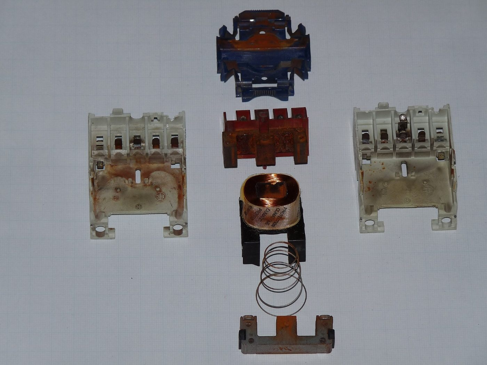

de su tensión: con eso la bobina ya debe cerrar firme

La IEC 60947-4-1 prueba el contactor ya caliente: debe cerrar bien entre el 85 % y el 110 % de su tensión de mando (Us). Y al quitar tensión debe soltar entre el 75 % y el 20 % en CA (hasta 10 % en CC).
Cierra (85–110 % Us)102 a 132 V
Suelta en CA (75–20 % Us)90 a 24 V
Ejemplo con bobina de 120 V CA:
Si el mando cae por debajo del 85 %, la norma ya no garantiza que cierre: mide la tensión en A1-A2 con el contactor energizado.
Bobinaelectroimán
Fuentes: IEC 60947-4-1 · ENEC, guía de ensayos 60947-4-1 · Schneider, ficha TeSys D · ABB, catálogo Motor Protection and Control · CR4 GlobalSpec · Foto: “Telemecanique contactor”, Dmitry G, CC BY-SA 3.0, Wikimedia Commons